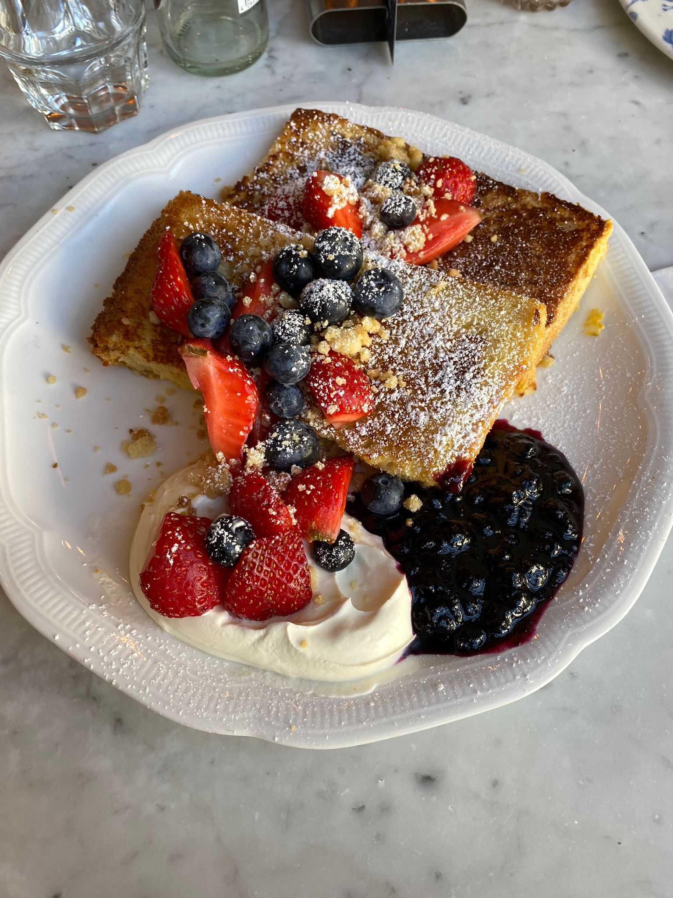
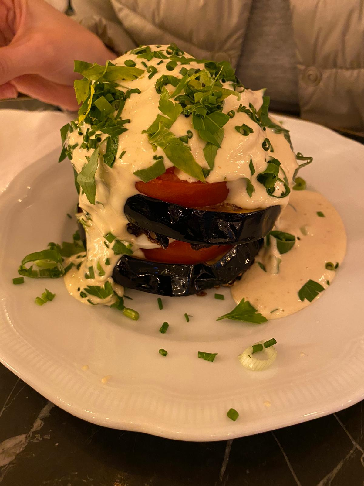

Benedict
Frühstück ist definitiv die allerbeste Mahlzeit des Tages. Nur schade, dass diese in den meistens Cafés begrenzt ist. Frühstück nur bis 12 Uhr? Ich könnte wirklich IMMER frühstücken. Mittags, abends, nachts – Süßes und Salziges haben bei mir rund um die Uhr eine Chance. Im Benedict gibt es: Frühstück 24/7.
“Es ist nie zu spät für Frühstück.”
Komm vorbei um Frühstück zum Abend zu essen.
Den ganzen Tag frühstücken
Diesen Frühstückstraum findet ihr in Wilmersdorf. Hier eröffnete Ende 2016 im Max Brown Hotel das Benedict Berlin. Das Restaurant-Konzept stammt eigentlich aus Tel Aviv und eröffnete mit der Berliner Filiale die erste Location ausserhalb von Israel.
Auf der Karte findet ihr wirklich ALLES, was das Frühstücksherz begehrt. Shakshuka, Eggs Benedict, den klassischen Frühstücksteller, Müsli, Pancakes oder der obligatorische Avocadotoast. Berühmt und berüchtigt sind aber vor allem die extrem leckeren und fluffigen Pancakes, die ihr mit verschiedenen Toppings und in zwei Größen bestellen könnt.
Wartezeiten muss man hier in kauf nehmen. Vor allem am Wochenende muss man damit rechnen 45 Minuten auf einen Platz zu warten und reservieren geht leider auch nicht. Die Pancakes werden frisch gemacht, deswegen dauert das auch etwas länger und wenn der Laden wirklich voll ist, was am Wochenende immer der Fall ist, dann kann es schon mal dauern. Doch es lohnt sich dann auch wenn die Speisen ankommen.
Meine Top Favorites:
- alle Pancake-Variationen
- Tower of Babylon
- French Toast
- Rösti
- Shakshuka